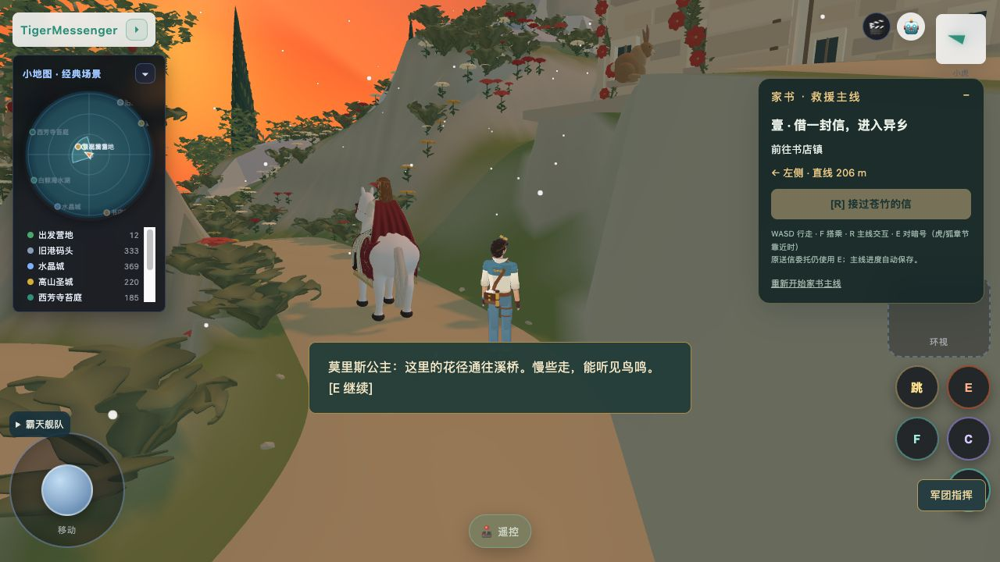
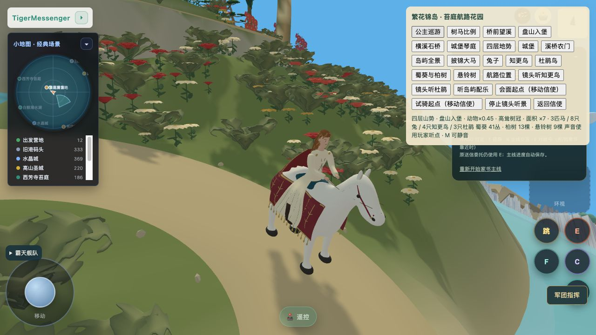
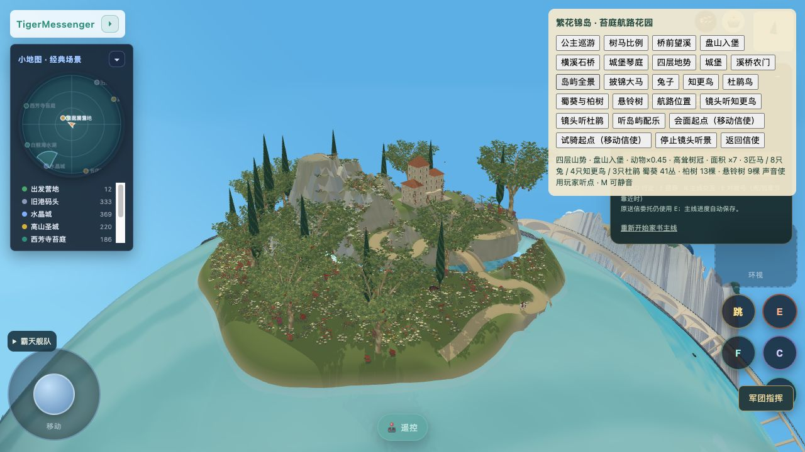
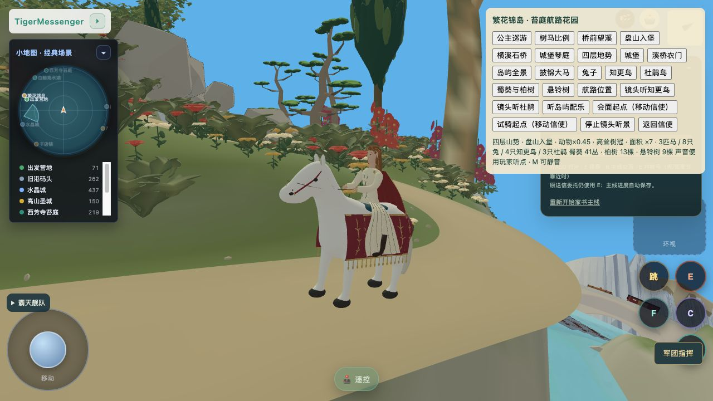

本页保留r43–45历史。查看最新r47：目标与地貌、白马逐项对照
2026-10-27。本页区分正式游戏截图、模型组件与未验收项。目标图不作游戏实测。
打开正式游戏·跟随公主 · 状态与缺项 · 源码与资产指纹
公主 reference-loft-v2、白马 tiger-workflow-horse-v2 均在正式入口加载。实际按 E 交谈，结束后继续巡游；记录两次过桥及上行返回。会面检查使用明确标注的移动信使按钮，并非步行抵达证明。


正式保护规则后为9棵悬铃树、41丛蜀葵，果实按用户装饰设定为红皮黄瓤。山体 r6 与目标仍有差距，琴庭侧大直壁及岩层变化继续待改。

正式 r45 已加载两份新GLB，真实E交谈及恢复移动再次通过，错误记录为空；当前巡游截图已实际看过，r45本次已记录一次过桥。

保留旧版，在真实蒙皮马蹄与岛屿支撑面间补整匹马高度修正，骑手与鞍座一起移动。修复测试中发现的蒙皮绑定矩阵刷新问题。20个路线采样的最低蹄底间距约1–1.3厘米；此项不是四腿IK，也不代表完整运动验收。
未验收：完整目标外形、布料与鬃毛精修、四腿连续贴地、跨轨桥净空、骑马渡海和骑马E老人最终验证。本轮没有提交或发布。